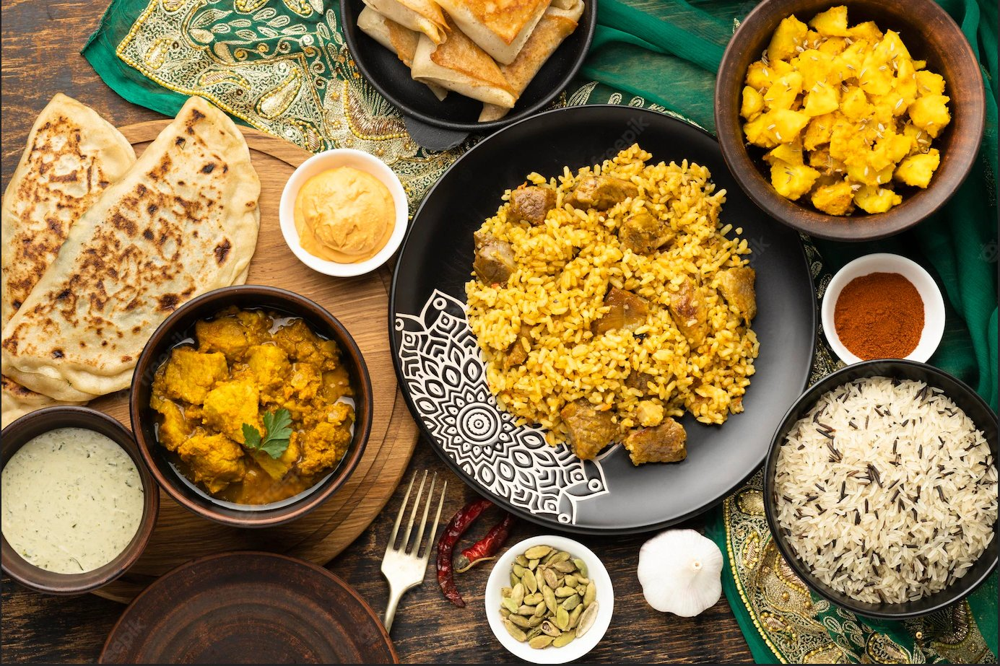

Hello foodies,Welcome to the world of wizardry foods made with the most wonderful and authentic flavours of spices.Who doesn't love food,food is a wonderful emotion but in today's busy schedule there is no free time making our favourite dishes and most of us are opting for unhealthy junk foods but don't worry with this quick and easy recipes provided in my blog you can try making the dishes anytime in a matter of minutes which are rich in nutrients and healthy.So why still waiting let's jump into the wonderful adventure of the enchnated flavours of food.

Before starting our ride with the flavours let me tell you about the beauty of indian cuisines. Indian food is mostly free from preservatives, We make use of number of herbs which are good in nutrients and healthy,Traditional way of cooking indian food includes making everything from scratch, Some of the most commonly used herbs in indian cuisines are turmeric, ginger, garlic and so on with so many in the list. As we learned about indian food let's start with our journey.
